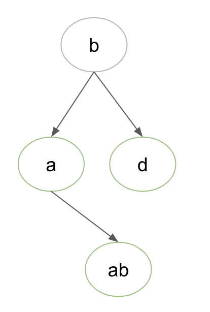

Binary Tree Definition
Introduction
A binary tree is an abstract tree data structure where every node has at most 2 children.
A binary tree is an abstract tree data structure where every node has at most 2 children.

There are several types of Binary tree.
A perfect binary tree is a binary tree in which all internal nodes have 2 children and all the leaf nodes are at the same depth or same level. The total number of nodes in a perfect binary tree with height H is 2H — 1.

A complete binary tree has all levels completely filled with nodes except the last level and in the last level, all the nodes are as left side as possible. A complete binary tree is a tree where every level, except possibly the last, is completely filled. The last level must be filled from left to right. Therefore, you can create a complete binary tree of 20 nodes by filling each level from left to right, until your tree has 20 nodes.

A degenerate binary tree is a binary tree where every parent node has only one child node.

The path length of a tree (binary tree) is the sum of the levels of all the tree's nodes.
The path length of a tree is the sum of the depth of all nodes in the tree.
The path length of a tree is a cost measure of great importance for the analysis of algorithms. P = (3 + 3 + 3 + 3) + (2 + 2 ) + 1 + 1 = 22

The average path length of a tree (with respect to a uniform probability distribution on the items in the tree) is its path length (the sum of the lengths of the path from the root to each node in the tree) divided by the number of nodes in the tree.

The binary search tree (BST) is a variation of the binary tree in which: 1) elements in left subtree are smaller than the elements in the current node, 2) elements in right subtree are greater than the the elements in the current node.
There can be several BSTs representing the same set of data ( {6,8,10,11,14,16,18 ,30,33} ) as shown in the following example.


Basic operations on a BST are:
There are two ways to construst a BST:
Let's do an illustration how to insert 30, 40, 10, 15, 12, 50:

Let's do an illustration how to insert 30, 40, 10, 15, 12, 50:


A tree can be represented by a list of tuples. Each tuple represents a particular node of the tree. The tuple's first element represents the label and the tuple's second element represents the pointers (indexes) to the left and right nodes.
tree = [
(label_1, [left_index_1, right_index_1]),
...
(label_n, [left_index_n, right_index_n])
]
A tree can be represented by a list of lists. The possibilities of tree representation are endless.
tree = [
[label_1, left_index_1, right_index_1],
...
[label_n, left_index_n, right_index_n]
]
Consider the following binary tree. Here is the implementation of the tree in Python.

tree = [
(16, [1,2]),
(11, [3,4]), (33, [5,6]),
(6, [None,7]), (14, []), (30, []), (35, []),
(10, [])
]
print(tree)
# Par exemple
print(tree[2][1]) # To get the list of children of the third node (indexed to 2)
# -> [5, 6]
print(tree[4][0]) # To get the key of the fifth node (indexed to 4)
# -> 14
###
def is_empty(tree):
return len(tree) == 0
###
def get_label(node):
return node[0]
print(get_label(tree[1])) # -> 11
def get_children(node):
return node[1]
print(get_children(tree[0])) # -> [1, 2]
def get_left(tree, node):
return tree[node[1][0]]
def get_right(tree, node):
tree[node[1][1]]
def get_root(tree):
return tree[0]
### Recursion (function calls itself within its code) vs Iteration (loop)
#### Recursion (function calls itself within its code)
def search_rec(tree, node, x):
if node is None or x == get_label(node):
return node
elif x <= get_label(node):
return search_rec(tree, get_left(tree, node), x)
else:
return search_rec(tree, get_right(tree, node), x)
print(search_rec(tree, (16, [1, 2]), 6)) # -> (6, [None, 7])
#### Iteration (loop)
def search_iter(tree, node, x):
node = get_root(tree)
while node is not None and x != get_label(node):
if x <= get_label(node):
node = get_left(tree, node)
else:
node = get_right(tree,node)
return node
print(search_iter(tree, (16, [1, 2]), 6)) # -> (6, [None, 7])
Search Operation in Binary Search Tree (BST) where the tree is represented as nested list with depth equal to the depth of the tree
tree = ['b', ['a', [], ['ab', [], []]], ['d', [], []]]

# Search Operation in Binary Search Tree (BST) where the tree is represented as
# nested list with depth equal to the depth of the tree
def search_bst(tree, word):
subtree = tree
while subtree[0] != word and subtree[0] != []:
if word < subtree[0]:
if subtree[1] == []:
return []
else:
subtree = subtree[1]
else:
if subtree[2] == []:
return []
else:
subtree = subtree[2]
return subtree[0]
tree = ['b', ['a', [], ['ab', [], []]], ['d', [], []]]
res = search_bst(tree, 'das')
print("search_bst:", res)
# Write a function isBinarySearchTree
# which takes a tree as a parameter and returns a boolean
# to know if the tree put in parameter is binary search tree or not.
# How can we know if a binary
# What is an BST?
# An BST (ABR) is a binary tree which verifies these conditions
# - for each node of the tree the set of nodes of its left subtree are lower or equal
# - and the set of nodes of its right subtree are higher.
def isBinarySearchTree(tree):
pass
tree = [('a', [1, 2]), ('b', [3, 4]), ('c', [-1, 5]),
('d', []), ('e', [-1, 6]), ('f', []), ('g', [])]
# print(isBinarySearchTree(tree) == False)
def hasLeftChild(node):
# Write a function hasLeftChild which takes as parameters a node a return True if this node has a left child otherwise False
if not node[1]:
return False
if node[1][0] == -1:
return False
return True
def hasRightChild(node):
# Write a function hasLeftChild which takes as parameters a node a return True if this node has a left child otherwise False
# aFilsDroit
if not node[1]:
return False
if node[1][1] == -1:
return False
return True
tree = [('a', [1, 2]), ('b', [3, 4]), ('c', [-1, 5]),
('d', []), ('e', [-1, 6]), ('f', []), ('g', [])]
# Write the function parcoursInfixe which implements the Iterative Depth First Traversal and which takes as parameters: a tree, a indexSubTree and a procedure to visit a node.
tree = [(18, [1, 2]), (10, [3, 4]), (35, [5, -1]), (6, []), (14, []), (30, [])]
def isRightTreeEmpty(tree, indexNode):
# sousArbreDroitEstVide
# Write a function isRightTreeEmpty which takes as parameters a tree and a indexNode and it returns True if this tree has not a right node otherwise False
node = tree[indexNode]
if not hasRightChild(node):
return True
else:
return False
def isLeftTreeEmpty(tree, indexNode):
# sousArbreGaucheEstVide
# Write a function isLeftTreeEmpty which takes as parameters a tree and a indexNode and it returns True if this tree has not a left node otherwise False
node = tree[indexNode]
if not hasLeftChild(node):
return True
else:
return False
tree = [(18, [1, 2]), (10, [3, 4]), (35, [5, -1]), (6, []), (14, []), (30, [])]
# def get_root_index(tree):
# if len(tree) == 0:
# return None
# index_child = []
# for i in range(len(tree)):
# index_child.extend(tree[i][1])
# for j in range(len(tree)):
# if j not in index_child:
# return j
# def inOrderSearch(tree, index):
# if not isLeftTreeEmpty(tree, index):
# inOrderSearch(tree, tree[index][1][0])
# print(tree[index][0])
# if not isRightTreeEmpty(tree, index):
# inOrderSearch(tree, tree[index][1][1])
# Write the function inOrderSearch which implements the inorder search and which takes as parameters: a tree, a indexSubTree and a procedure to visit a node.
# isLeftTreeEmpty, isRightTreeEmpty
def inOrderSearch(tree, indexNode):
if not isLeftTreeEmpty(tree, indexNode):
inOrderSearch(tree, tree[indexNode][1][0])
print(tree[indexNode])
if not isRightTreeEmpty(tree, indexNode):
inOrderSearch(tree, tree[indexNode][1][1])
def postOrderSearch(tree, index):
if not isLeftTreeEmpty(tree, index):
postOrderSearch(tree, tree[index][1][0])
if not isRightTreeEmpty(tree, index):
postOrderSearch(tree, tree[index][1][1])
print(tree[indexNode])
def preOrderSearch(tree, indexNode):
print(tree[indexNode])
if not isLeftTreeEmpty(tree, indexNode):
preOrderSearch(tree, tree[indexNode][1][0])
if not isRightTreeEmpty(tree, indexNode):
preOrderSearch(tree, tree[indexNode][1][1])
# tree = [(3, [1, 2]), (1, []), (5, [])]
tree = [(18, [1, 2]), (10, [3, 4]), (35, [5, -1]), (6, []), (14, []), (30, [])]
tree = [('b', [1, 2]), ('a', []), ('c', [-1, 3]), ('d', [])]
tree = [('b', [1, 2]), ('a', []), ('c', [])]
print("\n\ninOrderSearch")
inOrderSearch(tree, 0)
# print("postOrderSearch")
# postOrderSearch(tree, 0)
# print("preOrderSearch")
# preOrderSearch(tree, 0)